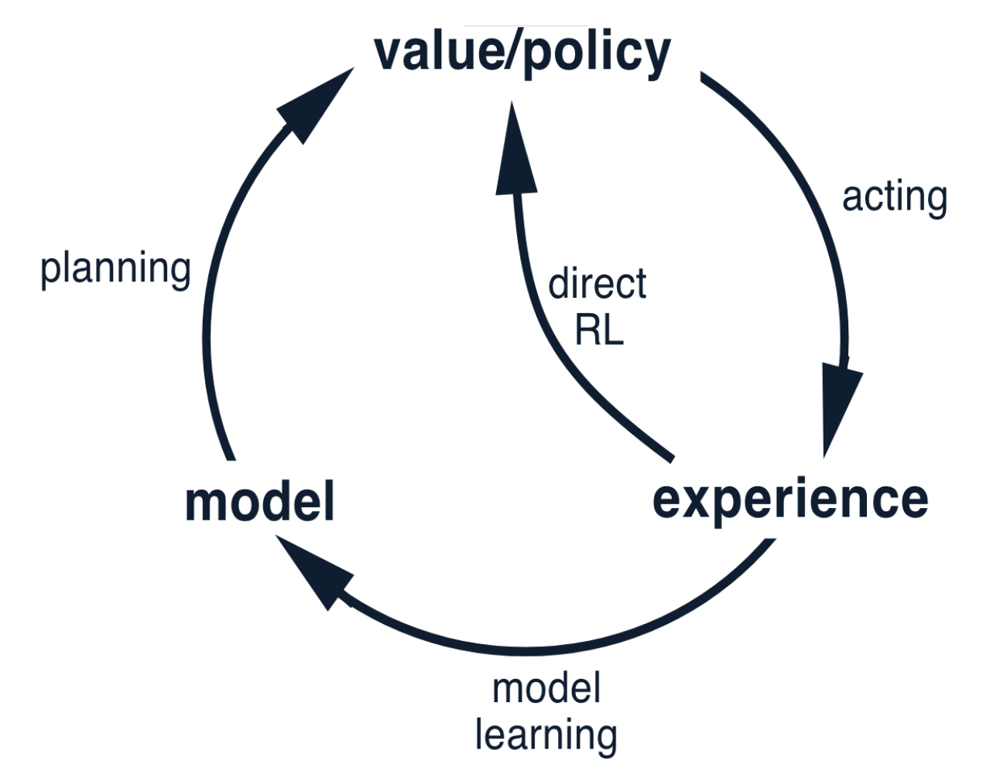
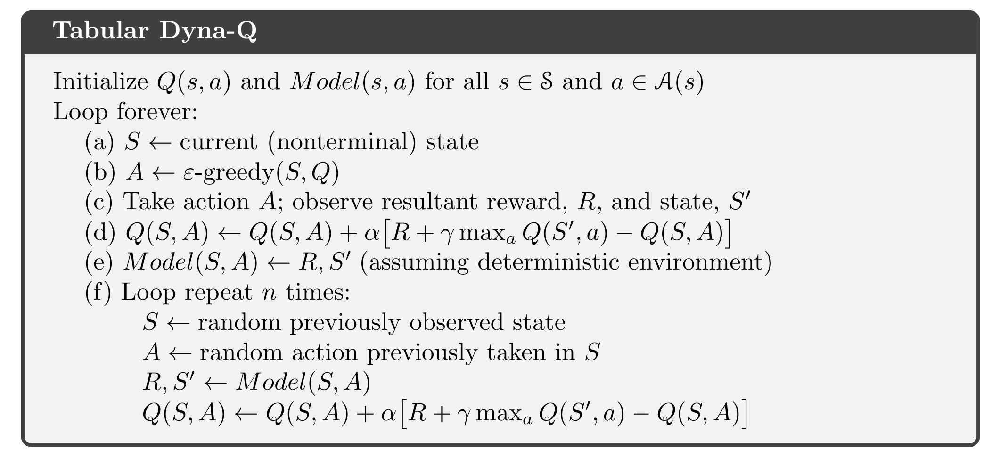
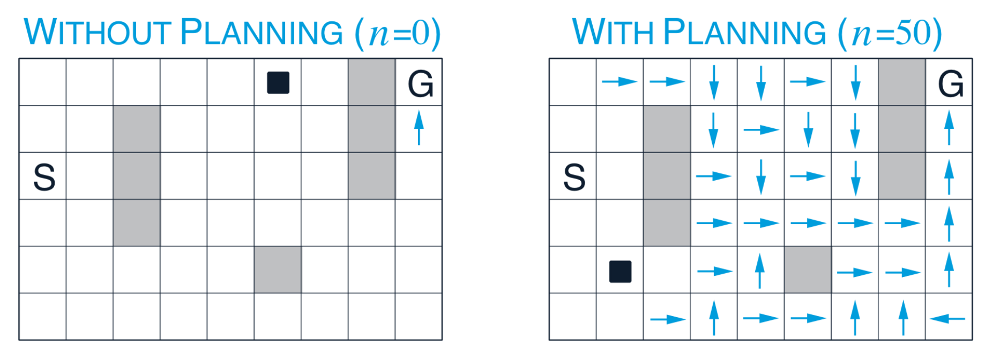
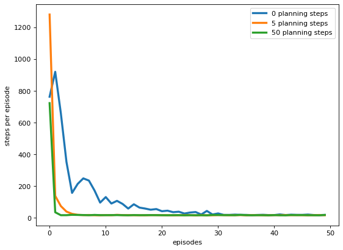

#######################################################################
# Copyright (C) #
# 2016-2018 Shangtong Zhang(zhangshangtong.cpp@gmail.com) #
# 2016 Kenta Shimada(hyperkentakun@gmail.com) #
# Permission given to modify the code as long as you keep this #
# declaration at the top #
#######################################################################
import numpy as np
import matplotlib.pyplot as plt
from tqdm import tqdm #progressbar
from copy import deepcopyLSE 455 Seminar 9 : Reinforcement Learning - Dyna: Integrated Planning, Acting, and Learning
The content of this notebook accompanies Chapter 8 in the Sutton & Barto book.


In the following we implement following Maze

The aim is to find a shortest path from S to G. Movements are allowed left, right, top and down but not on the greyed out obstacles.
Standard Random-sample one step tabular Q-planning methods suffer from only learning approximating the Q-value of tiles of distance \(k\) in \(k\) many iterations as depicted below.

The Dyna-Q Method on the right on the other hand, which revisits previously observed states (“Planning”) is able to offline at the end of an episode to update the Q-values accordingly.
class Maze:
def __init__(self):
# maze width
self.WORLD_WIDTH = 9
# maze height
self.WORLD_HEIGHT = 6
# all possible actions
self.ACTION_UP = 0
self.ACTION_DOWN = 1
self.ACTION_LEFT = 2
self.ACTION_RIGHT = 3
self.actions = [self.ACTION_UP, self.ACTION_DOWN, self.ACTION_LEFT, self.ACTION_RIGHT]
# start state
self.START_STATE = [2, 0]
# goal state
self.GOAL_STATES = [[0, 8]]
# all obstacles
self.obstacles = [[1, 2], [2, 2], [3, 2], [0, 7], [1, 7], [2, 7], [4, 5]]
# the size of q value
self.q_size = (self.WORLD_HEIGHT, self.WORLD_WIDTH, len(self.actions))
# max steps
self.max_steps = float('inf')
# take @action in @state
# @return: [new state, reward]
def step(self, state, action):
x, y = state
if action == self.ACTION_UP:
x = max(x - 1, 0)
elif action == self.ACTION_DOWN:
x = min(x + 1, self.WORLD_HEIGHT - 1)
elif action == self.ACTION_LEFT:
y = max(y - 1, 0)
elif action == self.ACTION_RIGHT:
y = min(y + 1, self.WORLD_WIDTH - 1)
if [x, y] in self.obstacles:
x, y = state
if [x, y] in self.GOAL_STATES:
reward = 1.0
else:
reward = 0.0
return [x, y], reward
# a wrapper class for parameters of dyna algorithms
class DynaParams:
def __init__(self):
# discount
self.gamma = 0.95
# probability for exploration
self.epsilon = 0.1
# step size
self.alpha = 0.1
# weight for elapsed time
self.time_weight = 0
# n-step planning
self.planning_steps = 5
# average over several independent runs
self.runs = 10
# threshold for priority queue
self.theta = 0
# choose an action based on epsilon-greedy algorithm
def choose_action(state, q_value, maze, dyna_params):
if np.random.binomial(1, dyna_params.epsilon) == 1:
return np.random.choice(maze.actions)
else:
values = q_value[state[0], state[1], :]
return np.random.choice([action for action, value in enumerate(values) if value == np.max(values)])
# Table lookup model for planning in Dyna-Q
class TrivialModel:
# @rand: an instance of np.random.RandomState for sampling
def __init__(self, rand=np.random):
self.model = dict()
self.rand = rand
# feed the model with previous experience
def feed(self, state, action, next_state, reward):
state = deepcopy(state)
next_state = deepcopy(next_state)
if tuple(state) not in self.model.keys(): # keys of dictionary shall be immutable, use tuble instead of list
self.model[tuple(state)] = dict()
self.model[tuple(state)][action] = [list(next_state), reward]
# In the last line, instead of appending the next_state-reward pair into a list, we replace it with the most
# recent observations. This is reasonable because under the current environment, the state transition and reward
# functions are deterministic. For each state-action pair, the associated next_state-reward pair can only take one
# value
# randomly sample from previous experience
def sample(self):
state_index = self.rand.choice(range(len(self.model.keys())))
state = list(self.model)[state_index]
action_index = self.rand.choice(range(len(self.model[state].keys())))
action = list(self.model[state])[action_index]
next_state, reward = self.model[state][action]
# For each state-action pair, there is only one unique next_state-reward pair
state = deepcopy(state) ## list is mutable, use deepcopy instead
next_state = deepcopy(next_state)
return list(state), action, list(next_state), reward# play for an episode for Dyna-Q algorithm
# @q_value: state action pair values, will be updated
# @model: model instance for planning
# @maze: a maze instance containing all information about the environment
# @dyna_params: several params for the algorithm
def dyna_q(q_value, model, maze, dyna_params):
state = maze.START_STATE
steps = 0
while state not in maze.GOAL_STATES:
# track the steps
steps += 1
# get action
action = choose_action(state, q_value, maze, dyna_params)
# take action
next_state, reward = maze.step(state, action)
# Q-Learning update
q_value[state[0], state[1], action] += \
dyna_params.alpha * (reward + dyna_params.gamma * np.max(q_value[next_state[0], next_state[1], :]) -
q_value[state[0], state[1], action])
# feed the model with experience
model.feed(state, action, next_state, reward)
# sample experience from the model
for t in range(0, dyna_params.planning_steps):
state_, action_, next_state_, reward_ = model.sample()
q_value[state_[0], state_[1], action_] += \
dyna_params.alpha * (reward_ + dyna_params.gamma * np.max(q_value[next_state_[0], next_state_[1], :]) -
q_value[state_[0], state_[1], action_])
state = next_state
# check whether it has exceeded the step limit
if steps > maze.max_steps:
break
return steps# set up an instance for DynaMaze
dyna_maze = Maze()
dyna_params = DynaParams()
runs = 10
episodes = 50
planning_steps = [0, 5, 50]
steps = np.zeros((len(planning_steps), episodes))
for run in tqdm(range(runs)):
for i, planning_step in enumerate(planning_steps):
dyna_params.planning_steps = planning_step
q_value = np.zeros(dyna_maze.q_size)
# generate an instance of Dyna-Q model
model = TrivialModel()
for ep in range(episodes):
# print('run:', run, 'planning step:', planning_step, 'episode:', ep)
steps[i, ep] += dyna_q(q_value, model, dyna_maze, dyna_params)
# averaging over runs
steps /= runs
plt.figure(figsize=(8, 6), dpi=80)
for i in range(len(planning_steps)):
plt.plot(steps[i, :], label='%d planning steps' % (planning_steps[i]), linewidth=3)
plt.xlabel('episodes')
plt.ylabel('steps per episode')
plt.legend()
plt.show()100%|███████████████████████████████████████████| 10/10 [00:32<00:00, 3.28s/it]